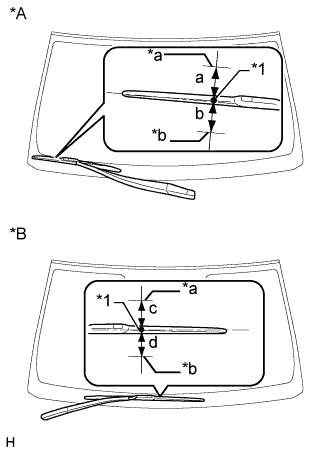

ЭЛЕКТРОДВИГАТЕЛЬ ПЕРЕДНЕГО СТЕКЛООЧИСТИТЕЛЯ > УСТАНОВКА |
| 1. УСТАНОВИТЕ ПРОВОД ЭЛЕКТРОДВИГАТЕЛЯ СТЕКЛООЧИСТИТЕЛЯ |
Введите захват в зацепление, чтобы закрепить провод электродвигателя стеклоочистителя.
| 2. УСТАНОВИТЕ ЭЛЕКТРОДВИГАТЕЛЬ СТЕКЛООЧИСТИТЕЛЯ ВЕТРОВОГО СТЕКЛА В СБОРЕ |
Установите электродвигатель стеклоочистителя и закрепите его 2 болтами с помощью торцевого ключа с головкой "TORX" T30.
Подсоедините разъем.
Без пружины:
 |
Нанесите универсальную консистентную смазку на ось кривошипа кривошипного рычага переднего стеклоочистителя.
| *1 | Ось кривошипа |
 | Универсальная консистентная смазка |
Подсоедините шток к оси кривошипа кривошипного рычага переднего стеклоочистителя.
| 3. УСТАНОВИТЕ КРИВОШИПНЫЙ РЫЧАГ ПЕРЕДНЕГО СТЕКЛООЧИСТИТЕЛЯ В СБОРЕ (для моделей с правосторонним рулевым управлением, с пружиной) |
Проверьте положение автоматического ограничителя хода.
Убедитесь, что электродвигатель останавливается автоматически в положении автоматического ограничения хода (Нажмите здесь).
Закрепите кривошипный рычаг переднего стеклоочистителя в сборе на электродвигателе переднего стеклоочистителя в сборе с помощью гайки таким образом, чтобы осевые линии пружины кривошипа и опоры тяги стеклоочистителя были параллельны.
| *A | Положение для установки кривошипного рычага переднего стеклоочистителя |
| *a | Осевая линия пружины кривошипа |
| *b | Осевая линия опоры тяги стеклоочистителя |
Нанесите универсальную консистентную смазку на ось кривошипа кривошипного рычага переднего стеклоочистителя в сборе.
| *1 | Ось кривошипа |
| Универсальная консистентная смазка |
Соедините шток тяги стеклоочистителя ветрового стекла с кривошипным рычагом переднего стеклоочистителя.
| 4. УСТАНОВИТЕ ЭЛЕКТРОДВИГАТЕЛЬ И ТЯГУ ПЕРЕДНЕГО СТЕКЛООЧИСТИТЕЛЯ |
Подсоедините уплотнительную втулку, как показано на рисунке.
| *1 | Уплотнительная шайба |
Установите электродвигатель и тягу переднего стеклоочистителя и закрепите их 2 болтами.
Подсоедините разъем.
Закрепите зажим.
| 5. УСТАНОВИТЕ ВЕНТИЛЯЦИОННУЮ РЕШЕТКУ В ВЕРХНЕЙ ЧАСТИ КОЖУХА В СБОРЕ |
 |
Введите в зацепление 10 направляющих (B).
Введите в зацепление 6 захватов и направляющую (A), как показано на рисунке.
| *1 | Направляющая A |
| *2 | Направляющая B |
Установите 2 фиксатора на вентиляционную решетку в верхней части кожуха.
| 6. УСТАНОВИТЕ ЦЕНТРАЛЬНУЮ ВЕНТИЛЯЦИОННУЮ РЕШЕТКУ В ВЕРХНЕЙ ЧАСТИ КОЖУХА № 2 |
Установите центральную вентиляционную решетку в верхней части кожуха № 2, закрепив ее 2 захватами и 3 направляющими.
| 7. УСТАНОВИТЕ ВЕРХНЕЕ УПЛОТНЕНИЕ МЕЖДУ КАПОТОМ И КОЖУХОМ |
| 8. УСТАНОВИТЕ РЫЧАГ ПРАВОГО ПЕРЕДНЕГО СТЕКЛООЧИСТИТЕЛЯ СО ЩЕТКОЙ В СБОРЕ |
Приведите в действие стеклоочиститель и остановите электродвигатель стеклоочистителя ветрового стекла в положении автоматического ограничения хода.
 |
При повторном использовании правого рычага переднего стеклоочистителя со щеткой в сборе:
Очистите зубчатую часть рычага стеклоочистителя.
| *1 | Зубчатая часть рычага стеклоочистителя |
| *2 | Проволочная щетка |
| *3 | Зубчатая часть оси вращения стеклоочистителя |
При повторном использовании тяги стеклоочистителя ветрового стекла в сборе:
Почистите зубчатую часть оси вращения стеклоочистителя проволочной щеткой.
|  |
Установите правый рычаг переднего стеклоочистителя со щеткой в сборе, как показано на рисунке, и закрепите их гайкой.
| Область | Нормальное состояние |
| a | 7,5 мм (0,295 дюйма) |
| b | 7,5 мм (0,295 дюйма) |
| c | 7,5 мм (0,295 дюйма) |
| d | 7,5 мм (0,295 дюйма) |
| *A | Для моделей с левосторонним рулевым управлением |
| *B | Для моделей с правосторонним рулевым управлением |
| *1 | Керамическая метка |
| *a | Верхняя граница |
| *b | Нижняя граница |
| 9. УСТАНОВИТЕ РЫЧАГ ЛЕВОГО ПЕРЕДНЕГО СТЕКЛООЧИСТИТЕЛЯ СО ЩЕТКОЙ В СБОРЕ |
|
При повторном использовании левого рычага переднего стеклоочистителя со щеткой в сборе:
Очистите зубчатую часть рычага стеклоочистителя.
| *1 | Зубчатая часть рычага стеклоочистителя |
| *2 | Проволочная щетка |
| *3 | Зубчатая часть оси вращения стеклоочистителя |
При повторном использовании тяги стеклоочистителя ветрового стекла в сборе:
Почистите зубчатую часть оси вращения стеклоочистителя проволочной щеткой.
 |
Установите левый рычаг переднего стеклоочистителя со щеткой в сборе, как показано на рисунке, и закрепите их гайкой.
| Область | Нормальное состояние |
| a | 7,5 мм (0,295 дюйма) |
| b | 7,5 мм (0,295 дюйма) |
| c | 7,5 мм (0,295 дюйма) |
| d | 7,5 мм (0,295 дюйма) |
| *A | Для моделей с левосторонним рулевым управлением |
| *B | Для моделей с правосторонним рулевым управлением |
| *1 | Керамическая метка |
| *a | Верхняя граница |
| *b | Нижняя граница |
Приведите в действие передние стеклоочистители, одновременно распыляя омывающую жидкость на ветровое стекло. Убедитесь, что передние стеклоочистители работают надлежащим образом и не задевают кузов автомобиля.
| 10. УСТАНОВИТЕ НАКЛАДКУ РЫЧАГА СТЕКЛООЧИСТИТЕЛЯ ВЕТРОВОГО СТЕКЛА |
 |
Введите в зацепление 3 захвата, чтобы установить накладку рычага стеклоочистителя.
| 11. УСТАНОВИТЕ ПРОКЛАДКУ МЕЖДУ ЛЕВЫМ ПЕРЕДНИМ КРЫЛОМ И КОЖУХОМ |
Введите в зацепление 5 захватов, чтобы установить уплотнение между левым передним крылом и кожухом.
| 12. УСТАНОВИТЕ ПРОКЛАДКУ МЕЖДУ ПРАВЫМ ПЕРЕДНИМ КРЫЛОМ И КОЖУХОМ |
| 13. УСТАНОВИТЕ ЗАЩИТУ БОКОВОЙ ПАНЕЛИ ЛЕВОГО ПЕРЕДНЕГО КРЫЛА |
Введите в зацепление 4 фиксатора и 2 направляющих, чтобы установить боковую панель крыла.
| 14. УСТАНОВИТЕ ЗАЩИТУ БОКОВОЙ ПАНЕЛИ ПРАВОГО ПЕРЕДНЕГО КРЫЛА |
| 15. УСТАНОВИТЕ ВЕРХНЕЕ УПЛОТНЕНИЕ КРОНШТЕЙНА РАДИАТОРА |
Установите верхнее уплотнение кронштейна радиатора и закрепите его 13 фиксаторами.
| 16. ПОДСОЕДИНИТЕ ПРОВОД К ОТРИЦАТЕЛЬНОМУ ВЫВОДУ АККУМУЛЯТОРНОЙ БАТАРЕИ |